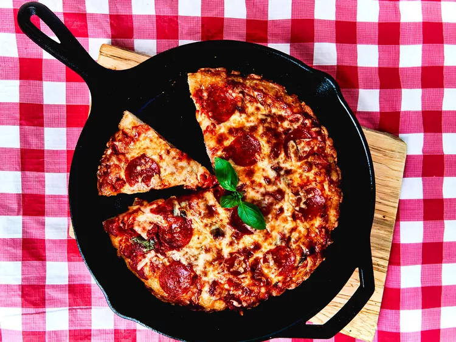

Step 1 Whisk flour, yeast, and salt together in a large bowl. Stir water and 1 tablespoon olive oil together in a separate bowl or measuring cup and add to flour mixture. Stir just until well combined.
Cover bowl with plastic wrap and let stand at room temperature until dough has tripled in size, 8 to 12 hours. Alternatively, cover and refrigerate at least 12 hours and up to 36 hours, or until dough has tripled in size.
Step 2 Uncover dough and transfer to a floured surface. Gently stretch and fold dough over a few times until nearly smooth; use your hands to lightly shape dough into a ball. Dough should remain a little sticky.
Step 3 Pour remaining olive oil into a 12-inch cast iron skillet and use your fingers to liberally coat the bottom and sides of the skillet.
Using oiled hands, transfer dough to the skillet, gently flatten into a thick disc shape, and lightly coat with some of the oil. Lightly cover the skillet with plastic wrap and set aside at room temperature for 2 hours.
Step 4 Preheat the oven to 400 degrees F (200 degrees C). Use fingers to lightly press dough to an even layer to the edges of the pan and about 1/2 inch up the sides.
Step 5 Sprinkle Parmesan cheese around the edges and over dough. Sprinkle 1/3 cup shredded mozzarella over dough.
Spread pizza sauce in an even layer over entire crust. Sprinkle with remaining cheese and top with pepperoni.
Step 6 Bake in the preheated oven until crust is golden around the edges and cheese is lightly browned and melted, 20 to 25 minutes.
Step 7 Remove from the oven and place on the stove over medium heat. Cook until bottom of crust is golden brown and toasted, 3 to 5 minutes.
Step 8 Carefully slide pizza from the pan to a wire rack; let stand for 10 minutes. Transfer pizza to a cutting board; slice and serve.
